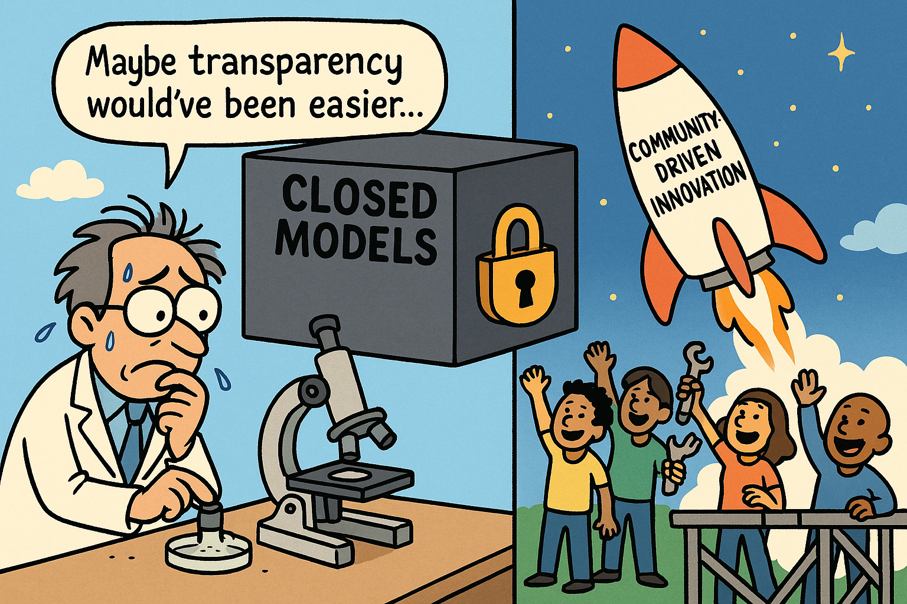

Maybe it is time to focus on open LLMs for doing research?
Disclaimer: This is not a RANT nor a post against LLMs and their benefits. This is just an naive opinion from someone who have no impact at all.
Science is, at its core, a collaborative, open, and reproducible process. It is based on transparency and collective scrutiny. In recent years, with the hype of large language models (LLMs), this has dramatically changed the landscape of artificial intelligence research. Yet, much of this transformation has been driven by big companies that offer us mere glimpses of their advances—either through closed systems or poorly written papers that explain implementation details in a childish way. More important people than me has make such statement, but the truth is that If we care about the future of open science, it’s time we stop normalizing the use of closed LLMs in research.
Open science is not just a buzzword. It’s a commitment to transparency, reproducibility, and community-driven progress. In the context of LLMs, that means open models, open code, and open weights. Closed models violate these principles. When researchers cannot inspect, fine-tune, or deploy a model independently, the work becomes unreplicable — a fundamental failure by scientific standards.
There is a growing trend in academic publishing: testing the latest closed model (be it from OpenAI, Google, Anthropic, or Meta) on some niche or standard task, writing it up, and calling it a Scientific PAPER. This does not move the field forward in any meaningful way. These papers are not science — they are product reviews in disguise. And worse, they reinforce the power of the few actors who gate access to the models.
For those of us outside big tech, and working in an academia with not so many resources, the situation may feel hopeless. We don’t have the infrastructure or resources to train SOTA models. But that doesn’t mean we are powerless. Instead of racing to benchmark closed models, we should focus on improving and applying small, local, and open models (SLMs) to real-world problems. There’s a rich and meaningful space for innovation here — in reasoning, fine-tuning, alignment, and domain adaptation. Let’s focus on pushing these models to their full potential. Let’s explore new ideas. Let’s do what we do best: real, research.
It’s time for the research community to stop publishing — and stop reviewing — papers that rely on closed models. Let’s leave that for the youtuber/influecer of the day. Moreover, I would go further and say that say that If a paper’s core contribution depends on an inaccessible system, it should be disqualified on principle. We have no guarantee that the same results can be reproduced, or that something within the model hasn’t changed in the meantime.

Don’t get me wrong — I find the performance and progress of closed models impressive, and I have no issue with big tech protecting their business interests. Everyone does what’s best for themselves. But we’re talking about science here and as scientists outside of big tech, we don’t need to play by the same rules. Let’s reward work that builds, improves, or meaningfully applies models that the broader community can actually use.
The dominance of closed models is not inevitable. It’s a choice — one we can and should reject. Science should not be dependent on API keys and NDAs. If we care about equitable access, true reproducibility, and the long-term health of our field, then the path forward is clear: embrace open models, and leave the rest behind.